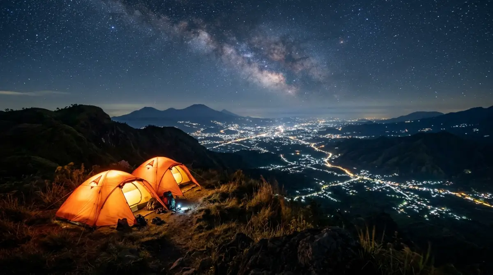
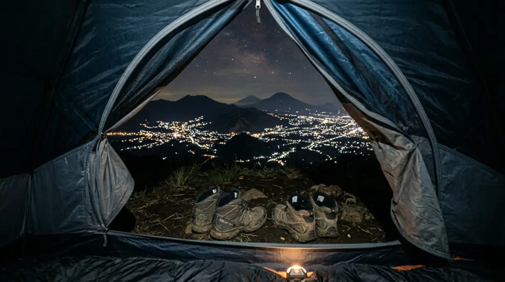

Pemandangan gemerlap lampu Kota Batu dari lokasi camping Paralayang Gunung Banyak — momen magis yang wajib kamu saksikan langsung.Bayangkan kamu sudah menghabiskan lima hari penuh menatap layar laptop, merevisi dokumen, dan menghadapi tenggat waktu pekerjaan yang seolah tidak ada habisnya. Penat, bukan? Rutinitas memang sering kali menguras habis energi kita. Terkadang, kamu hanya butuh jeda untuk bernapas jauh dari hiruk-pikuk itu.
Nah, bayangkan akhir pekan ini kamu duduk santai di depan tenda, menyesap kopi panas, sementara di bawah sana, lampu-lampu Kota Batu berpendar bagai lautan kunang-kunang. Momen magis semacam ini benar-benar ada di depan mata, dan sejujurnya, kamu mungkin akan menyesal jika terus menundanya karena alasan "nanti saja kalau tidak sibuk". Usia dan tenaga kita ada batasnya; jangan sampai keindahan menyambut pagi berkabut ini terlewatkan.
Jika kamu mencari tempat camping paralayang batu untuk pelarian singkat yang sepadan, panduan lengkap ini sudah merangkum semua yang kamu butuhkan. Dari rincian biaya, sewa tenda, hingga rahasia menikmati malam yang sempurna, mari kita bahas tuntas.
Mengapa Memilih Tempat Camping Paralayang Batu?
Mencari lokasi pelarian yang ideal setelah lelah bekerja terkadang terasa seperti mencari jarum di tumpukan jerami. Kamu ingin suasana alam yang tenang, tapi tidak ingin repot mendaki berjam-jam sambil memanggul keril berat layaknya sedang melakukan tugas lapangan dari kantor. Di sinilah kawasan Gunung Banyak di Kota Batu hadir sebagai solusi sempurna.
Berada di ketinggian sekitar 1.315 meter di atas permukaan laut, area ini awalnya dikenal sebagai titik lepas landas olahraga paralayang. Namun, seiring berjalannya waktu, pelatarannya yang luas dan pemandangannya yang terbuka tanpa halangan menjadikannya destinasi kemah favorit. Kemudahan akses jalan membuat tempat ini sangat ramah bagi pendaki pemula, keluarga, maupun pekerja kantoran yang hanya punya waktu libur dua hari.
Pesona Gemerlap City Light Kota Apel
Pernahkah kamu lembur di gedung bertingkat dan melihat lampu-lampu kota Jakarta atau Surabaya dari kaca jendela kantormu? Cantik, memang, tapi rasanya terkurung. Di Paralayang Batu, pengalaman melihat city light terasa jauh berbeda. Udara yang menyapu wajahmu adalah angin pegunungan yang segar, bukan embusan AC sentral ruangan.
Saat matahari benar-benar tenggelam, Kota Batu di bawah sana perlahan menyala. Dari titik kemah, kamu bisa melihat lekuk kota yang bercahaya keemasan di tengah gelapnya lembah. Ini adalah waktu terbaik untuk mematikan notifikasi ponselmu.
Duduklah di kursi lipatmu, tarik ritsleting jaket tebalmu, dan nikmati betapa kecilnya masalah-masalah pekerjaan jika dibandingkan dengan hamparan semesta di depan matamu. Menemukan tempat camping paralayang batu yang pas untuk menikmati malam ini adalah investasi terbaik untuk kewarasan pikiranmu.

Area camping ground Paralayang Batu yang luas dan mudah diakses — cocok untuk keluarga, pemula, maupun rombongan kantor.Mengejar Golden Sunrise Tanpa Harus Mendaki Jauh
Salah satu kendala terbesar melihat sunrise di gunung adalah keharusan untuk bangun pukul dua pagi dan berjalan mendaki dalam gelap. Di Paralayang Batu, ceritanya berbeda. Kamu hanya perlu membuka pintu tendamu sekitar pukul lima pagi.
Jika cuaca sedang cerah, perpaduan warna jingga, merah muda, dan ungu akan perlahan mengusir pekatnya malam dari balik ufuk timur. Momen golden sunrise di sini sering kali dihiasi oleh siluet Gunung Arjuno dan Gunung Welirang di kejauhan. Menyaksikan matahari terbit perlahan ini rasanya seperti mendapatkan "gaji tambahan" dari alam — sebuah penghargaan atas kerja kerasmu selama sepekan. Pastikan kameramu siap, karena pemandangan transisi pagi ini berlangsung cukup cepat.
Rincian Biaya dan Harga Tiket Masuk Paralayang Batu
Salah satu hal yang sering membuat kita ragu untuk liburan adalah budgeting. Menyusun anggaran liburan sering kali terasa mirip dengan menyusun laporan keuangan divisi akhir bulan. Tapi tenang saja, berkemah di sini jauh dari kata mahal.
Tiket Masuk dan Retribusi Parkir
Untuk memasuki area Gunung Banyak, kamu akan dikenakan biaya retribusi gerbang utama. Harganya sangat terjangkau, biasanya berkisar antara Rp15.000 hingga Rp20.000 per orang untuk tiket masuk reguler.
Jika kamu memutuskan untuk menginap dan mendirikan tenda, akan ada tambahan biaya untuk tiket camping yang biasanya dibanderol sekitar Rp15.000 hingga Rp25.000 per orang. Kendaraan juga dikenakan tarif parkir inap. Untuk sepeda motor, siapkan dana sekitar Rp10.000, sedangkan untuk mobil di kisaran Rp20.000. Parkiran di sini cukup luas dan dijaga, sehingga kamu tidak perlu overthinking memikirkan keamanan kendaraan saat sedang terlelap.
Biaya Sewa Lahan dan Peralatan Camping
Bagaimana jika kamu tidak punya tenda? Jangan khawatir, ini bukan presentasi klien di mana kamu harus menyiapkan semuanya sendiri dari nol. Di lokasi tempat camping paralayang batu, banyak penyedia jasa penyewaan alat kemah yang beroperasi.
Jika kamu membawa tenda sendiri, kamu hanya perlu membayar biaya lahan seperti yang disebutkan di atas. Namun, jika kamu ingin terima beres, kamu bisa menyewa tenda dome dengan kapasitas 2–4 orang dengan harga mulai dari Rp60.000 hingga Rp100.000 per malam, tergantung ukuran.
Selain tenda, menyewa sleeping bag (kantong tidur) adalah kewajiban jika kamu tidak ingin menggigil. Harganya berkisar Rp15.000 per malam. Matras spons bisa disewa sekitar Rp10.000. Bahkan, beberapa pengelola menyewakan perlengkapan memasak portabel (nesting dan kompor) jika kamu ingin bereksperimen menjadi koki dadakan di atas gunung. Semuanya tersedia lengkap, persis seperti ruang suplai pantry di kantormu.
"Menemukan tempat camping yang mudah diakses namun tetap menyuguhkan keindahan alam sejati adalah keberuntungan yang tidak boleh disia-siakan oleh siapapun yang hidup di era serba sibuk ini."
— Refleksi Pelancong ModernFasilitas Pendukung: Liburan Nyaman Tanpa Ribet
Konsep camping di sini adalah rekreasi santai. Kamu tidak akan dituntut untuk memiliki kemampuan bertahan hidup ala Bear Grylls. Fasilitas yang tersedia dirancang untuk menunjang kenyamanan pengunjung dari berbagai kalangan.
Toilet dan Area Parkir
Satu hal yang paling ditakutkan saat berkemah adalah urusan sanitasi. Kabar baiknya, kawasan wisata Paralayang Batu memiliki fasilitas toilet umum yang memadai dan cukup bersih. Terdapat toilet pria dan wanita dengan pasokan air yang lancar. Mengingat cuaca yang dingin, air di toilet ini akan terasa seperti air es, jadi bersiaplah secara mental sebelum memutuskan untuk membasuh wajah di pagi hari!
Area parkir letaknya tidak jauh dari area camping ground. Kamu hanya perlu berjalan kaki beberapa menit saja dari tempat parkir ke lokasi mendirikan tenda. Ini sangat membantu, terutama jika kamu membawa banyak logistik dan barang bawaan.
Warung Makan 24 Jam: Solusi Perut Keroncongan
Pernah merasa lapar tengah malam saat lembur, lalu bingung mencari makan karena aplikasi ojek online sudah sepi? Di Paralayang Batu, hal itu tidak akan terjadi. Terdapat deretan warung-warung kayu yang dikelola oleh warga setempat, dan banyak di antaranya buka selama 24 jam penuh di akhir pekan.
Warung-warung ini adalah penyelamat sejati. Mereka menyediakan berbagai menu "comfort food" yang terasa sepuluh kali lipat lebih nikmat saat disantap di cuaca dingin. Mulai dari mi instan rebus pakai telur, jagung bakar manis pedas, bakso hangat, hingga kopi hitam dan minuman jahe. Kamu bisa menghangatkan badan sambil mengobrol santai bersama teman-teman tanpa takut kelaparan. Harga makanan di sini pun relatif standar wisata, tidak akan sampai membuatmu mengelus dada.
Tips Lengkap Sebelum Berkemah di Gunung Banyak
Agar liburanmu berjalan lancar layaknya proyek yang sudah di-acc atasan tanpa revisi, ada beberapa persiapan dan aturan main yang harus kamu perhatikan. Pengalaman terbaik datang dari persiapan yang matang.
Pilihan Pakaian untuk Menghalau Udara Dingin
Jangan pernah meremehkan angin malam di Kota Batu. Meskipun ini bukan gunung es, suhu di malam dan dini hari bisa turun drastis, hingga membuat gigimu bergemeretak jika salah kostum.
Tinggalkan jaket denim tipis atau cardigan estetikmu untuk sementara. Gunakan teknik layering atau berlapis. Pakailah kaus berbahan nyaman yang menyerap keringat di lapisan pertama, lalu tumpuk dengan jaket tebal (sebaiknya berbahan polar atau jaket windbreaker penahan angin). Jangan lupakan penutup kepala (kupluk atau beanie), sarung tangan, dan kaus kaki tebal. Percayalah, kaus kaki adalah pahlawan tanpa tanda jasa saat tidur di alam terbuka.
Waktu Terbaik Berkunjung dan Aturan Lokal
Waktu terbaik untuk mencari tempat camping paralayang batu adalah pada musim kemarau, tepatnya antara bulan Mei hingga September. Pada bulan-bulan ini, curah hujan sangat rendah sehingga kamu bisa menikmati langit malam yang bertabur bintang serta pemandangan lampu kota yang tidak tertutup kabut tebal.
Hindari datang terlalu sore jika kamu berkunjung di akhir pekan (Sabtu–Minggu), karena lahan camping sering kali cepat penuh. Datanglah sekitar pukul 3 atau 4 sore untuk mengamankan tempat terbaik yang menghadap langsung ke arah kota.
Selain itu, jadilah tamu yang bertanggung jawab. Bawa kembali sampahmu (siapkan trash bag khusus) dan jangan merusak fasilitas yang ada. Hormati pengunjung lain dengan tidak menyetel musik terlalu keras di atas pukul 10 malam. Alam adalah ruang istirahat bersama, mari kita jaga ketenangannya.
Penutup
Pada akhirnya, hidup bukan sekadar soal seberapa cepat kamu menyelesaikan tumpukan pekerjaan atau seberapa sering kamu mencapai target bulanan. Tubuh dan pikiranmu berhak mendapatkan jeda untuk menikmati hal-hal sederhana yang mengagumkan — seperti udara segar, obrolan hangat ditemani jagung bakar, dan sinar matahari pagi yang membias perlahan di atas Kota Batu.
Momen-momen seperti inilah yang sering kali akan kita ingat bertahun-tahun kemudian, bukan rapat maraton di hari Selasa. Jangan tunggu sampai stres menumpuk baru mencari jalan keluar. Segarkan kembali pikiranmu akhir pekan ini. Pelataran Paralayang Batu sudah menunggu dengan sejuta lampunya yang menawan. Berangkatlah sekarang, dan bawa pulang energi baru yang siap membantumu menghadapi hari-hari ke depan.
FAQ — Tempat Camping Paralayang Batu